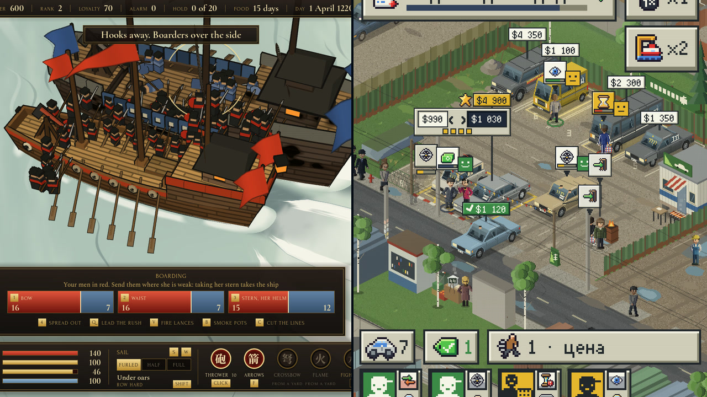
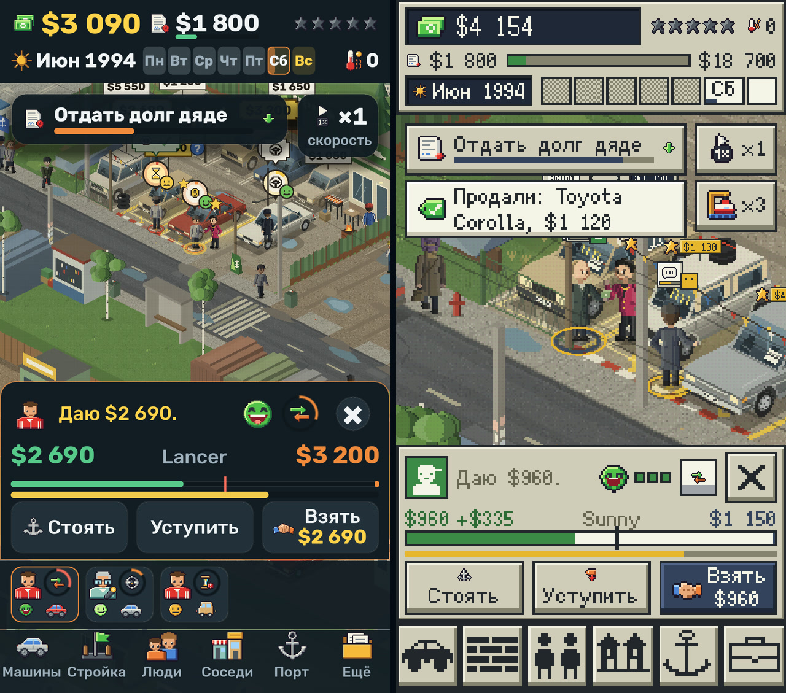

Forty-two hours in, thirty to go. Yesterday we wrote how one person and one AI build two games at once. Several people told us it was too long, so this one is shorter and has more moving pictures.

Day one was the machine building. Day two was the human saying no. Nearly everything below started as one sentence of his that began with "I don’t like" or "this is not".
Pirates of the Japan Sea
Yesterday’s game had a grey box in the corner for the ship. He called it unacceptable. The machine drew six interfaces on one page, he pointed at black lacquer and gold, and every screen was rebuilt in one pass. His answer: "Getting better. I like the UI."

Then he opened the folder of target paintings from day one and asked whether boarding looked like the fourth one. It did not: boarding was three bars filling up, seen from far away. Now the camera comes down, the hulls are lashed side by side and both crews fight on her deck.
Other sentences of his, and what they turned into:
- "A SAIL! is not informative." The lookout now tells more the closer a sail comes: first a sail, then her size and course, then her flag, then her name, crew and cargo.
- "Very little traffic." Merchants on routes between ports, fishing boats, patrols of whoever holds the water, pirates who attack everybody.
- "We need to move on." Rivers you can sail into, with towns and sandbars. Five hulls ordered at yards. A cove of your own to build. Villages to raid or tax. Storming a port in three fights. Day, night and weather.
He also asked for the things a prototype lacks and a game has: a main menu, three voyages saved side by side, three captains to begin as, an archive that keeps what you found across voyages, and legends with relics that work as lasting bonuses and grow with your standing in a water. And one rule about pace, after "the boat must feel fast": time runs faster the higher the eye is, up to ten times at the top, while the helm answers the same at any speed.
Yesterday we wrote that the machine cannot hear and nobody knew whether the sound was any good. He put the headphones on. It was not: "too much rowing, loud and constant". The sea is a recording now, and the music is played on instruments of the 1200s: guqin, xiao, gayageum, war drums.
JDM Car Lot Tycoon
The car game has a second name. In Russian it stays «Правый руль: Зелёный угол»; for everyone else it is JDM Car Lot Tycoon. And it has the interface he chose yesterday, made of pixels like the world under it, with tabs that have no words at all. The designer who said "you can see it’s Claude" was right about the text, so most of it went into pictures. The friend from Vladivostok asked for more variety: there are 164 models in 16 colours now, with trim levels and local nicknames that still need a local to check them.

Yesterday we quoted his one-word ruling, "Rubles." The machine built it properly: street exchange rates month by month, old roubles, the 1998 redenomination. He played it and wrote: "I want the dollars back. It adds that whole exchange rate minigame, not sure about it." Dollars are back. Roubles are a switch in the settings. A ruling lasts until the human has played it.
"The port is a port, the yard is up on the hills." The lot and the quay used to share one picture. Now they are two places. On ship day you go down to the port, and the cars you bought drive up to the yard in a column.
The hills took three tries. Real Green Corner is terraces of cars up a hillside, and the machine first drew a five-storey town there. "Weird, out of place." Now the hills are stepped pads with two rows of cars and a lane on each, and other dealers’ lots below the road.
The night shift
On Saturday the pirate game got one standing order to cover the hours when nobody is watching: keep going in batches, without asking, until it looks like the reference paintings, and check and publish every batch. Between two and three on Sunday morning fourteen versions were saved in a single hour: raiding, paid work from towns, fog, service under the Khan, the cove, named pirate captains, six peoples of the coast.
The car game has its own version of this. Every build that passes its checks lands on his phone by itself, and he answers when he wakes up.
This is the honest risk of working like this. The machine now builds faster than one person can play, and much of what it built overnight is still waiting for him. Anything he has not played is a guess.
Where the machine failed today
- The screen went black. On his phone the whole picture flashed black on every pinch. The machine’s checks run without a screen and saw nothing. There is now a check that plays a pinch on a real renderer and fails on a dark frame.
- It was too strict. Asked for cars that move realistically, it wrote right-of-way rules so careful that cars stood in a jam for a game week. The new rule is his: "It has to be close. It’s okay if they do a clippy and go on their merry way."
- It built systems that did nothing. Owner’s manuals to collect, finds on a shelf, auction sheet notes: all present, none changing play. "Systems give no bonus." Now a manual makes that model’s repairs cheaper and faster.
- The browser build crawled. Twenty frames a second on a laptop chip. The machine measured instead of guessing: a third of each frame was edge smoothing nobody would miss. It runs at sixty now.
- It got a name wrong. For a day the machine kept telling the human that the uncle in the car game was called Igor. In the game’s own data he had been Misha all along.
Day two in numbers
- Pirates of the Japan Sea: 44 more saved versions, the code doubled to about 19,000 lines, 21 checks instead of 12.
- JDM Car Lot Tycoon: build 7 became build 23, 164 car models instead of 78.
- Rulings reversed by the person who made them: one. Interfaces thrown away: two.
Update, 23 November: you can play both now. They run in the browser, free, on itch.io: Pirates of the Japan Sea (a computer with a keyboard and mouse) and JDM Car Lot Tycoon (a phone or a computer). The car game is also on Google Play in early access. These are jam builds and they change several times a day.
Update, 23 November, later: JDM Car Lot Tycoon has a trailer. Watch it on YouTube, or see it on the game’s page.
Thirty hours left. Both games go to the judges on Monday evening, Vladivostok time. We build in the open and change things from what people tell us, the length of these posts included: contact@goldenharbourgames.com. Day three tomorrow.